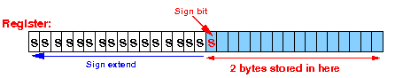
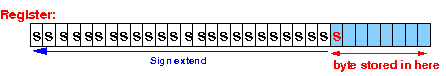
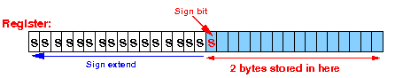
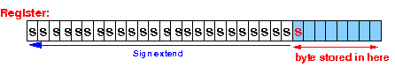

- To understand what's going on, I like to give you
a little background first - because
you may not know this when you are
writting programs
in a high level programming language
(such as Java).
- Fact 1:
- All of the
variables that you define
in your computer program are
stored inside the
computer memory
- All of the
variables that you define
in your computer program are
stored inside the
computer memory
- Fact 2:
- The computer memory
cannot perform
computations (calculations)
- Only the CPU contains the necessary circuitry (ALU !) to perform computations !!!
- The computer memory
cannot perform
computations (calculations)
- Therefore: in order to perform
computations using
the values in program
(that are stored in memory):
- We must be first
transfer the
value stored in
a memory variable to
a register inside the
CPU:
Notice that the register contains a copy of the value in the memory variable !!!
- Then, we
use the
register (copy value) in the
computation:
- We must be first
transfer the
value stored in
a memory variable to
a register inside the
CPU:
-
Principle of
access data that is stored in
the computer memory:
- We can access (= read or write) data
stored in
computer memory if we know:
- The starting location in
memory
where the data is stored
- The number of bytes used to store the data
- The starting location in
memory
where the data is stored
- You often need to
find (= compute) the
(starting) address
- You must know exactly how many bytes of memory is used to store the data !!!
|
|
Applying this principle is the most challenging part in assembler programming because:
|
|
It's very easy to make programming mistakes in accessing data in memory when you write assembler programs...
- To support different
data types in
a high level programming language,
a processor will
provide
different instructions
to move values between the
CPU and memory:
- There will be an instruction to move byte typed values consisting of 1 byte
- There will be an instruction to move short typed values consisting of 2 bytes
- There will be an instruction to
move int and
float typed values
consisting of 4 bytes
- Some processors may have an instruction to move long and double typed values consisting of 8 bytes
Notice that moving (= copying) instruction only need to know how many bytes it needs to move (= copy) to perform correctly.
So you can use the same move instruction on data types that contains the same number of bytes
- The ARM instruction that
move (= copy) data from the memory into a register is called:
- The Load Register instruction
The Load Register instruction has (too) many different formats, and we will only learn 3 formats to save time for other more important material.
- To support different data types in
a high level programming language,
every processor (and the ARM processor is no execption)
will provide
different load register instruction
The ARM processor has 3 different load register instructions:
ldr (load register (full)): moves 4 (consecutive) bytes from memory into a register ldrsh (load register half): moves 2 (consecutive) bytes from memory into a register and sign extends the 16 bits (= 2 bytes) representation into a 32 bits (int) representation ldrsb (load register byte): moves 1 byte from memory into a register and sign extends the 8 bits representation into a 32 bits (int) representationI will now present the most basic format of the load register instruction that will be used (discussed soon) to move values stored in simple variables into a register in the CPU.
Syntax and meaning of the basic form of the load register instruction is:
Syntax Meaning of the instruction ---------------- -------------------------------------------------- ldr rN, [rM] Load 4 bytes from memory at the address given in rM into the (destination) register rN The 4 bytes are stored in the register as follows:
 ldrsh rN, [rM] Load 2 bytes from memory at the address given
in rM into the (destination) register rN
AND fill the left half of register with the sign bit
The 2 bytes are stored at the right and then
sign extended to 32 bits:

ldrsb rN, [rM] Load 1 byte from memory at the address given
in rM into the (destination) register rN
AND fill the left 3/4 of register with the sign bit
The byte is stored at the right and then
sign extended to 32 bits:

ldrsh rN, [rM] Load 2 bytes from memory at the address given
in rM into the (destination) register rN
AND fill the left half of register with the sign bit
The 2 bytes are stored at the right and then
sign extended to 32 bits:

ldrsb rN, [rM] Load 1 byte from memory at the address given
in rM into the (destination) register rN
AND fill the left 3/4 of register with the sign bit
The byte is stored at the right and then
sign extended to 32 bits:

The reason that we sign-extend a byte and a short is obvious:
- All (integer) arithmetic operations are
performed
in the int data type
(see:
click here )
The ldrsb and the ldrsh instructions convert the byte and short representations to an int representation so that the arithmetic operation(s) can be performed with the int representation for better accuracy !!!
Example:
- Suppose r0
contains the value 4000 (decimal)
(Remember that register r0 contains a binary number, what I mean is: the binary number in register r0 represents the decimal value 4000)
The instruction ldr r1,[r0] will:
- Transfer 4 bytes stored in memory locations 4000,4001,4002,4003 into the (destination) register r1:
In picture:
- All (integer) arithmetic operations are
performed
in the int data type
(see:
click here )
- Before we can use the
ldr instruction
to move the value stored
in a program variable into
a register, we must
first:
- Move the address of the
desired program variable
into some register
(e.g., in r0 or
r1)
- We have previously learned how to move the address of a memory variable into a register: click here !!!
You must use a register that is "free", i.e.: the register does not contain any value that is needed in future operations
Note:
- Register "management"
is an integral part of
assembler programming
You must learn to manage (coordinate the usage) of the limited number of registers inside the CPU
That's why you need to know how many registers a processor has and their names !!!
Maybe it's time for you to check up on the registers in the ARM processor: click here
- Move the address of the
desired program variable
into some register
(e.g., in r0 or
r1)
- How to move a
value stored in a
memory variable into
a register:
1. Move the address of the memory variable into a (free) register rX 2. Then use: ldr destreg, [rX] for an int/float typed variable ldrsh destreg, [rX] for a short typed variable ldrsb destreg, [rX] for a byte typed variable
- Let's define
3 different typed of
integer values as follows:
.data i: .4byte 444444 // int typed variable s: .2byte 2222 // short typed variable b: .byte 111 // byte typed variableThe following instructions will move the int typed (4 bytes) in variable i into the register r1:
// Move i into r1 movw r0, #:lower16:i // Moves the address of memory movt r0, #:upper16:i // variable i into register r0 ldr r1,[r0] // Move int representation in var into r1The following instructions will move the short typed (2 bytes) in variable s into the register r2:
// Move s into r2 movw r0, #:lower16:s // Moves the address of memory movt r0, #:upper16:s // variable s into register r0 ldrsh r2,[r0] // Move short representation in var into r2 // and sign-extend into an int representationAnd the following instructions will move the byte typed (1 byte) in variable b into the register r3:
// Move b into r3 movw r0, #:lower16:b // Moves the address of memory movt r0, #:upper16:b // variable b into register r0 ldrsb r3,[r0] // Move byte representation in var into r3 // and sign-extend into an int representation
- Example Program:
(Demo above code)

- Prog file: /home/cs255001/demo/asm/2-mov/ldr.s
How to run the program:
- Get a copy first
- To compile: as255 ldr
- To run: use EGTAPI